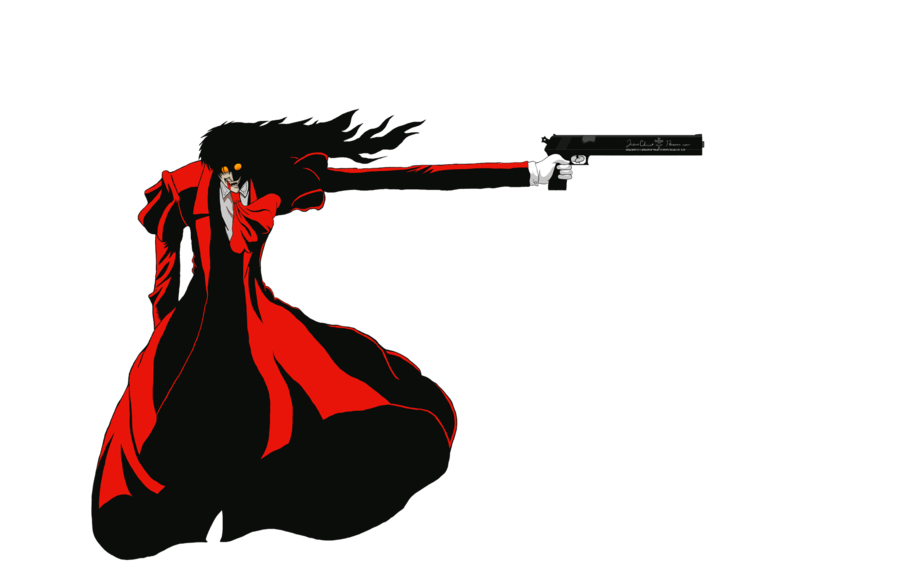
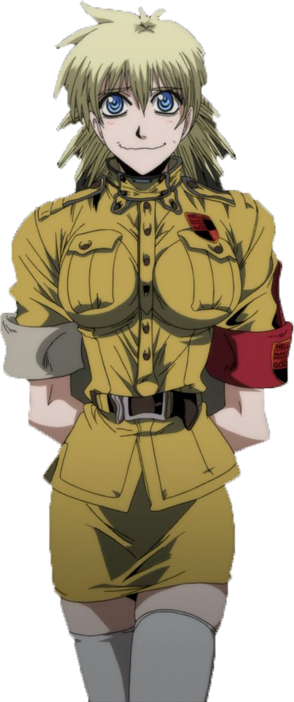

The bird of hermes my name
eating my wings to make me tame

Allukard
He is the most powerful weapon of the Hellsing Organisation which works against vampires and other such supernatural forces. Alucard is no mere Vampire;
it has been implied that he is the most powerful vampire alive and may be the most powerful character in the series, rivaled only by The Captain and Alexander Anderson.
He is also Seras Victoria's Master and a very loyal servant to the Hellsing Organisation's leader; Sir Integra Fairbrook Wingates Hellsing.
Allukard
He is the most powerful weapon of the Hellsing Organisation which works against vampires and other such supernatural forces. Alucard is no mere Vampire;
it has been implied that he is the most powerful vampire alive and may be the most powerful character in the series, rivaled only by The Captain and Alexander Anderson.
He is also Seras Victoria's Master and a very loyal servant to the Hellsing Organisation's leader; Sir Integra Fairbrook Wingates Hellsing.
